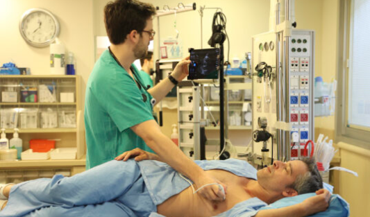

AISAP, a medical technology company developing AI-powered point-of-care assisted diagnosis (POCAD) solutions to transform medical ultrasound, has announced that the US Food and Drug Administration (FDA) has granted 510(k) clearance for its first-of-a-kind, artificial intelligence (AI)-powered AISAP CARDIO point-of-care ultrasound (POCUS) software platform.
AI-powered point-of-care ultrasound system gains US FDA approval
10th September 2024 by Will Date will@bibamedical.com

AISAP CARDIO is indicated to provide diagnostic assessment and measurement of key cardiac structural functional parameters
The cloud-based platform combines four computer-assisted diagnosis (CADx) modules of valvular pathologies and eight key measurements into a single cardiac ultrasound software package that automatically generates analyses, interpretations and reports
According to AISAP, the technology enables clinicians with basic scanning skills to diagnose up to 90% of the most common cardiac structural and functional parameters right at the bedside within minutes.
“AISAP CARDIO has the potential to be a game-changer in the world of point-of-care ultrasound,” said Smadar Kort, system director of non-invasive cardiac imaging at Stony Brook Medicine (New York, USA), and a past governor of the American College of Cardiology (ACC). “We know that structural heart disease and heart failure are the leading causes of hospitalisation and morbidity in the USA. Enabling a wide variety of qualified physicians to quickly and accurately diagnose these conditions at the bedside could lead to earlier detection and treatment, and better patient outcomes, as well as greater efficiencies and cost savings to health systems, while ultimately saving countless lives.”
AISAP CARDIO is indicated to provide diagnostic assessment and measurements of several key cardiac structural functional parameters, including: presence of valvular pathology (regurgitations of the mitral, tricuspid, aortic valves and aortic stenosis), and measurements of left ventricle ejection fraction (LVEF), right and left ventricular dimensions, right ventricular fractional area change (RV FAC), atrial areas, ascending aorta diameter, and inferior vena cava (IVC) diameter.
“AISAP CARDIO was developed by top-notch technologists and cardiologists to close critical gaps in patient care. Our ‘anywhere, anytime AI’ approach is aimed at transforming healthcare by bringing cutting-edge diagnostic tools to the point of care,” said Adiel Am-Shalom, CEO, AISAP.